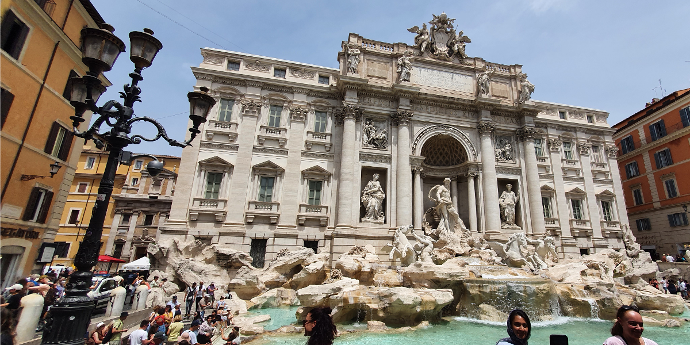
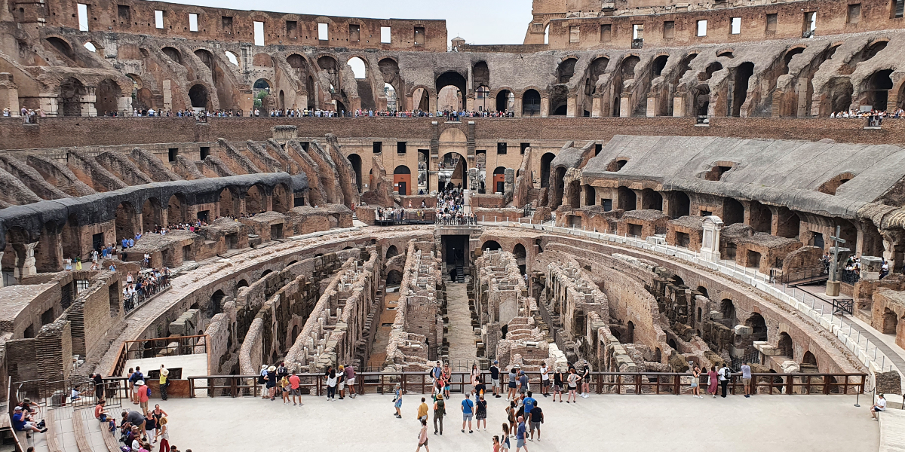
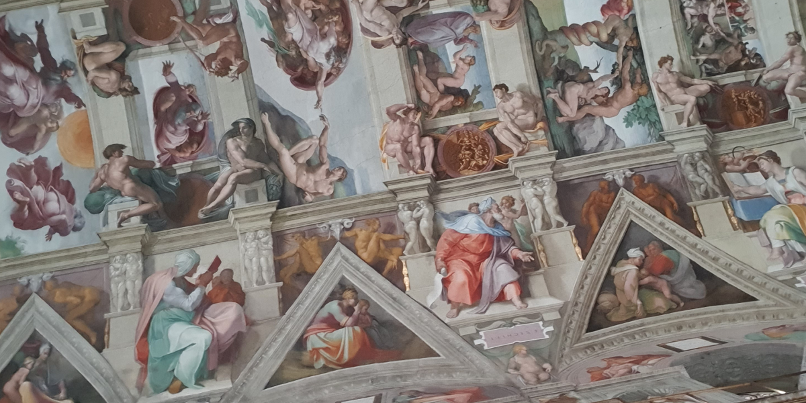

ROME
- 
-
TREVI FONTEIN
De eerste dag in Rome gingen wij een beetje de stad verkennen. Zo kwamen wij uit bij de Trevi Fontein. Deze fontein is gebouwd in opdracht van paus Clemens XII, van 1732 tot 1762. De naam Trevi komt van tre en vi, twee woorden die samen staan voor drie wegen. Dit komt omdat er vroeger drie wegen op het plein van de fontein uitkwamen. Het is de grootste en meest bekendste fontein in heel Rome.
-
COLOSSEUM
Dat we naar het Colosseum wilde, wisten we al voor we in Rome aankwamen. Het was snikheet die dag, maar met tickets in de hand zijn we toch even naar binnen geweest. Dat was het ook helemaal waard! Vroeger werd het Colosseum alleen gebruikt voor de spelen die door de keizer georganiseerd werden, waaronder gladiatorengevechten tussen mensen en dieren. In totaal zijn er ongeveer negenduizend tamme en wilde dieren afgeslacht.
- 
- 
-
SIXTIJNSE KAPEL
Onze laatste bezienswaardigheid van deze vakantie was de Sixtijnse Kapel in Vaticaanstad. Dit was nogal een gedoe, omdat ze hier heel streng waren over wat je wel en niet aan mocht doen. Beetje jammer, want je mocht geen shorts dragen terwijl het toch 32 graden was. De highlight van de dag was de schildering op het plafond, wat hiernaast op de foto te zien is.